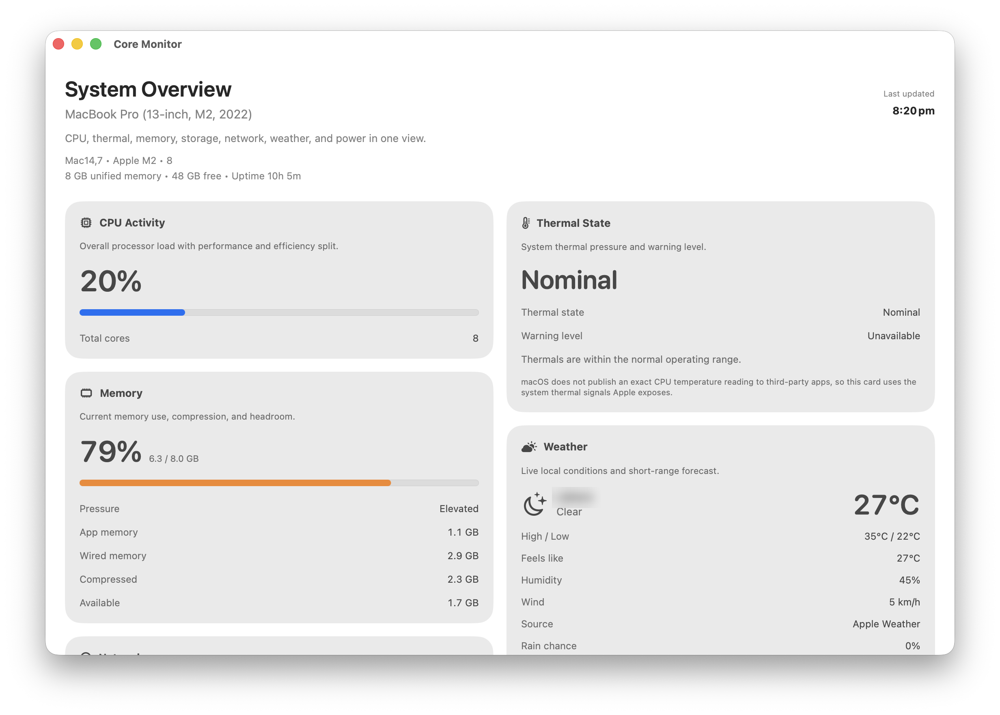

CPU
Total load, with the performance and efficiency cores read separately.
Running cool. Everything looks normal.
Core-Monitor reads temperature, CPU and GPU load, power draw, memory, battery and fan speed from the sensors already inside your Apple Silicon Mac, and shows them in one native window and the menu bar. No account, no telemetry, and fan control only when you ask for it.

Readings
CPU, GPU, memory, battery, thermals, power draw, fan speeds, network and disk. Readings come from the Apple SMC and standard macOS system APIs, so the numbers match what the hardware actually reports.
Total load, with the performance and efficiency cores read separately.
CPU and GPU temperatures from the SMC, next to macOS thermal pressure.
Memory pressure, with app, wired and compressed memory broken out.
Each fan’s live speed, and which mode is driving it.
System draw, battery charge, health and cycle count.
Download and upload throughput across all interfaces.
Used, purgeable and free capacity on the startup disk.
Readings on this page are simulated to show how the app behaves. Nothing here reads your device.
Tour
The dashboard, the thermal panel in the menu bar, and a custom fan curve.
Screens
History sits behind each number, and the menu bar carries a short version, so the window can stay closed most of the day.
Fan control
Out of the box, Core-Monitor only watches the fans. Install the optional helper and you get three ways to drive them: a fixed speed, a boost profile, or a curve you draw yourself, point by point.
72°C 3,910 rpm
Custom curveAn example curve. Drag the temperature to move the operating point.
Touch Bar
On Macs that still have one, Core-Monitor turns the Touch Bar into a strip of live instruments that sits above whatever app has focus.
Stats, optional live weather, shortcuts and memory pressure, arranged with a live width preview so a layout never runs off the edge of the strip. The strip holds its place across apps, so you can check a reading or launch something without switching windows. Live weather stays off until you enable it.
Privacy
Core-Monitor reads your system, then keeps that data on your Mac. There is no account to create and no telemetry to switch off.
Live Weather is off by default. If you enable it, Apple WeatherKit receives your location after you grant permission. Read the source code and check for yourself.
Compare
A handful of good Mac monitors already exist. This is where Core-Monitor sits next to them, stated plainly.
| App | Strong at | Where Core-Monitor differs |
|---|---|---|
| iStat Menus | Covers dozens of metrics across many menu bar modules. | Narrower on purpose. Heat, power and fans, open source, with no license to buy. |
| TG Pro | Deep per-sensor diagnostics. | Monitoring comes first here; writing fan speed is an optional layer, not the whole app. |
| Macs Fan Control | Direct control over fan speed. | Wraps that control in a full dashboard, with history, alerts and menu bar readouts. |
| Stats | Free, modular menu bar widgets. | One dedicated window with history, built specifically around thermals. |
Install
Both are free. Only the direct build reads the temperature sensors and controls fans.
The full app: SMC temperatures, fan speeds, power draw, Touch Bar widgets, and optional fan control through a helper you install only if you want it. Signed and notarized, from GitHub. macOS 13 or later.
brew tap --custom-remote offyotto/core-monitor \ https://github.com/offyotto/Core-Monitorbrew install --cask offyotto/core-monitor/core-monitor
Sandboxed and read-only: CPU, memory, network, storage, battery, and thermal state, with updates through the App Store. No sensor temperatures, fan control, or Touch Bar. macOS 14 or later.

FAQ
Short, direct answers to what people usually check first.
Apple Silicon Macs on macOS 13 or later. The sensors and fan interfaces it reads are specific to Apple’s own chips, so Intel Macs are not supported.
No. Every reading works without it. It exists only so the app can write fan speeds, and you can hand control back to macOS whenever you like.
Core-Monitor has no account, advertising, or analytics, and it does not send monitoring data to the developer. Live Weather is off by default. If you explicitly enable it, the app asks macOS for location access and requests weather from Apple WeatherKit. Turning it off stops Core-Monitor’s weather requests; macOS and App Store components may still make their own connections to Apple services.
macOS keeps its own thermal limits regardless of what any app requests. Core-Monitor also keeps an obvious way out: one click gives full control back to the system.
Cloud dashboards, fleet management, and a metric for every corner of the OS. The scope stays heat, power, memory, battery and fans, done properly.
Open an issue on the GitHub tracker. Release notes and older builds live on the releases page.